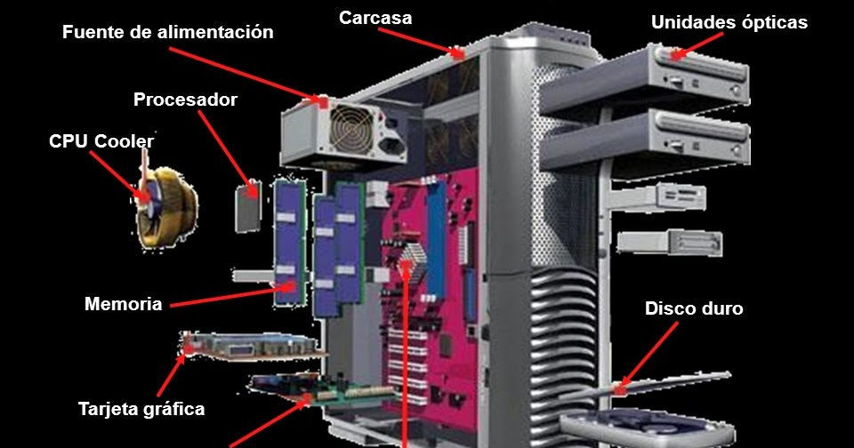

Arquitectura de computadoras
Para regresar al inicio,da click aqui
1.1 MODELO DE ARQUITECTURAS
La arquitectura de computadoras es la organización lógica del
hardware de los ordenadores. Se trata de un conjunto de principios que describen
cómo se pueden describir las características del hardware del ordenador y cómo
interactúan entre sí. La arquitectura de los ordenadores también se denomina arquitectura
de la CPU o arquitectura del ordenador. La arquitectura de un ordenador determina su
rendimiento, sus capacidades y sus límites.
1.1.1 CLASICAS
Estas arquitecturas se desarrollaron en las primeras
computadoras electromecánicas y de tubos de vacío. Aun son usadas en procesadores
empotrados de gama baja y son la base de la mayoría de las arquitecturas modernas
Arquitectura Mauchly-Eckert (Von Newman) La principal desventaja de esta arquitectura,
es que el bus de datos y direcciones único se convierte en un cuello de botella por el
cual debe pasar toda la información que se lee de o se escribe a la memoria, obligando
a que todos los accesos a esta sean secuenciales.
1.1.2 SEGMENTADAS
Las arquitecturas segmentadas o con segmentación del cauce buscan
mejorar el desempeño realizando paralelamente varias etapas del ciclo de instrucción
al mismo tiempo. El procesador se divide en varias unidades funcionales independientes
y se dividen entre ellas el procesamiento de las instrucciones.
1.1.3 MULTIPROCESAMIENTO
Cuando se desea incrementar el desempeño más aya de lo que permite
la técnica de segmentación del cauce (limite teórico de una instrucción por ciclo de reloj),
se requiere utilizar más de un procesador para la ejecución del programa de aplicación.
Las CPU de multiprocesamiento: SISO – (Single Instruction, Single Operand )
computadoras independientes SIMO – (Single Instruction, Multiple Operand )
procesadores vectoriales MISO – (Multiple Instruction, Single Operand )
No implementado MIMO –
(Multiple Instruction, Multiple Operand )
sistemas SMP, Clusters
1.2 ANALISIS DE LOS COMPONENTES
Consiste en una técnica de selección de características concreta que
utiliza una transformación ortogonal para convertir un conjunto de observaciones de variables,
posiblemente correlacionadas, en un conjunto más reducido de variables que ya no guardan
correlación y que se conocen como componentes principales.
1.2.1 ARQUITECTURAS
Tanto la miniaturización como la estandarización de los CPU han aumentado
la presencia de estos dispositivos digitales en la vida moderna mucho más allá de las
aplicaciones limitadas de máquinas de computación dedicadas. Los microprocesadores modernos
aparecen en todo, desde automóviles, televisores, neveras, calculadoras, aviones, hasta
teléfonos móviles o celulares, juguetes, entre otros.
1.2.1.1 UNIDAD CENTRAL DE PROCESAMIENTO
La unidad central de procesamiento (conocida por las siglas CPU,
del inglés Central Processing Unit) o procesador es un componente del hardware dentro de un ordenador,
teléfonos inteligentes, y otros dispositivos programables.
Su función es interpretar las instrucciones de un programa informático mediante la realización de las
operaciones básicas aritméticas, lógicas, y externas (procedentes de la unidad de entrada/salida).
Su diseño y su avance ha variado notablemente desde su creación, aumentando su eficiencia y
potencia y reduciendo el consumo de energía y el coste.
1.2.1.2 UNIDAD ARITMETICA LOGICA
La unidad aritmética lógica o unidad aritmético-lógica, también conocida
como ALU (siglas en inglés de arithmetic logic unit), es un circuito digital que realiza operaciones
aritméticas (suma, resta) y operaciones lógicas (SI, Y, O, NO) entre los valores de los argumentos (uno o dos).
Los circuitos electrónicos más complejos son los que están construidos dentro de los chips de
microprocesadores modernos.Estos procesadores tienen dentro de ellos un ALU muy complejo y potente.
Un microprocesador moderno (y los mainframes) puede tener múltiples núcleos, cada núcleo con múltiples
unidades de ejecución, cada una de ellas con múltiples ALU.
1.2.1.3 REGISTROS
Un registro es una memoria que esta ubicada en el procesador y se encuentra en el
nivel más alto en la jerarquía de memoria, por lo tanto tiene una alta velocidad pero con poca
capacidad para almacenar datos que va desde los 4 bits hasta los 64 bits dependiendo del procesador
que se utilice. Los datos que almacena son los que se usan frecuentemente
1.2.1.4 BUSES
El bus es la vía a través de la que se van a transmitir y recibir todas las comunicaciones,
tanto internas como externas, del sistema informático.
El bus es solamente un dispositivo de transferencia de información entre los componentes conectados a él, no
almacena información alguna en ningún momento.
Los datos, en forma de señal eléctrica, sólo permanecen en el bus el tiempo que necesitan en recorrer la
distancia entre los dos componentes implicados en la transferencia.
En una unidad central de sistema típica, el bus se subdivide en tres buses o grupos de líneas.
• Bus de direcciones.
• Bus de datos.
• Bus de control.
1.2.2 MEMORIA
La memoria (también llamada almacenamiento) se refiere a parte de los componentes
que forman parte de una computadora. Son dispositivos que retienen datos informáticos durante algún
intervalo de tiempo. Las memorias de computadora proporcionan una de las principales funciones de la computación moderna,
la retención o almacenamiento de información. Es uno de los componentes fundamentales de todas las computadoras modernas
que, acoplados a una unidad central de procesamiento (CPU por su sigla en inglés, central processing unit),
implementa lo fundamental del modelo de computadora de Arquitectura de von Neumann, usado desde los años 1940.
1.2.2.1 CONCEPTOS BASICOS DEL MANEJO DE LA MEMORIA
Reproduce bajo el control directo y continuo del programa que solicita la operacionesde E/S.
Tanto de la entrada y salida del programa como una interrupcion,el procesador es responsable de extraer
los datos de la memoria en una salida y almacenar los datos en la memoria principal.
1.2.2.2 MEMORIA PRINCIPAL
La memoria principal es la parte del computador donde se almacenan las aplicaciones de software,
el sistema operativo y otra información para que la unidad central de procesamiento (CPU) tenga un acceso directo
y rápido cuando se requiera para efectuar las tareas. Se describe como la memoria interna de la computadora.
Se coloca la palabra “principal” para deslindarla de los dispositivos de almacenamiento periféricos.
También se denomina memoria de acceso aleatorio (RAM), ya que La CPU puede ir inmediatamente a cualquier
sector de la memoria sin tener que hacer este proceso como una secuencia.
1.2.2.3 MEMORIA CACHE
Memoria caché o memoria de acceso rápido a uno de los recursos con los que cuenta una CPU
(Central Processing Unit, o sea, Unidad Central de Procesamiento) para almacenar temporalmente los datos
recientemente procesados en un búfer especial, es decir, en una memoria auxiliar.
La memoria caché opera de modo similar a la Memoria Principal del CPU, pero con mayor velocidad a pesar de
ser de mucho menor tamaño. Su eficacia provee al microprocesador de tiempo extra para acceder a los datos
más frecuentemente utilizados, sin tener que rastrearlos a su lugar de origen cada vez que sean necesarios.
1.2.3 MANEJO DE LA ENTRADA/SALIDA
Entrada/salida, también abreviado E/S o I/O (del original en inglés input/output),
es la colección de interfaces que usan las distintas unidades funcionales (subsistemas) de un sistema
de procesamiento de información para comunicarse unas con otras, o las señales (información) enviadas
a través de esas interfaces. Las entradas son las señales recibidas por la unidad, mientras que las
salidas son las señales enviadas por ésta. El término puede ser usado para describir una acción;
"realizar una entrada/salida" se refiere a ejecutar una operación de entrada o de salida.
1.2.3.1 ENTRADA/SALIDA PROGRAMADA
Los dispositivos de Entrada y Salida permiten la comunicación entre la computadora y el usuario.
1.2.3.2 ENTRADA/SALIDA MEDIANTE INTERRUPCIONES
El módulo de E/S interrumpirá al CPU para solicitar su servicio cuando esté preparado para intercambiar datos.
El CPU ejecuta la transferencia de datos y después continúa con el procesamiento previo.
Se pueden distinguir dos tipos:
°E/S síncrona y E/S asíncrona E/S Síncrona: cuando la operación de E/S finaliza, el control es
retornado al proceso que la generó. La espera por E/S se lleva a cabo por medio de una instrucción wait
que coloca al CPU en un estado ocioso hasta que ocurre otra interrupción.
°E/S Asíncrona: retorna al programa usuario sin esperar que la operación de E/S finalice.
Se necesita una llamada al sistema que le permita al usuario esperar por la finalización de E/S (si es requerido).
1.2.3.3 ACCESO DIRECTO A MEMORIA
El acceso directo a memoria (DMA, del inglés direct memory access) permite a cierto tipo de
componentes de una computadora acceder a la memoria del sistema para leer o escribir independientemente de la
unidad central de procesamiento (CPU) principal. Muchos sistemas hardware utilizan DMA, incluyendo controladores de unidades
de disco, tarjetas gráficas y tarjetas de sonido. DMA es una característica esencial en todos los ordenadores modernos,
ya que permite a dispositivos de diferentes velocidades comunicarse sin someter a la CPU a una carga masiva de interrupciones.
1.2.3.4 CANALES Y PROCESADORES DE ENTRADA Y SALIDA
En las entradas y salidas que se ejecutan desde el procesador entran tres conceptos que se deben conocer.
DMA
Con un incremento moderado de la lógica asociada con el periférico se puede lograr transferir un bloque de
información a o desde la memoria principal sin la intervención directa de la UCP. Esto requiere que los
periféricos o los controladores de E/S sean capaces de generar direcciones de memoria y transferir
datos a o desde el bus del sistema.
CANALES
El canal de E/S es una extensión del concepto de DMA. Un canal de E/S tiene la capacidad de ejecutar instrucciones
de E/S, lo que da un control total sobre las operaciones de E/S. Las instrucciones de E/S se almacenan en la
memoria principal y serán ejecutadas por un procesador de propósito específico en el mismo canal de E/S.
1.2.3.5 BUSES
El bus (o canal) es un sistema digital que transfiere datos entre los componentes de una computadora o entre
computadoras. Está formado por cables o pistas en un circuito impreso, dispositivos como resistores y
condensadores además de circuitos integrados. En los primeros computadores electrónicos, todos los buses
eran de tipo paralelo, de manera que la comunicación entre las partes del computador se hacía por medio de
cintas o muchas pistas en el circuito impreso, en los cuales cada conductor tiene una función fija y la
conexión es sencilla requiriendo únicamente puertos de entrada y de salida para cada dispositivo.
1.2.4 TIPO DE BUSES
Bus paralelo
Es un bus en el cual los datos son enviados por bytes al mismo tiempo, con la ayuda de varias líneas que
tienen funciones fijas. La cantidad de datos enviada es bastante grande con una frecuencia moderada
y es igual al ancho de los datos por la frecuencia de funcionamiento.
Diagrama de un Bus Backplane como extensión del bus de procesador.
El front-side bus de los procesadores Intel es un bus de este tipo y como cualquier bus presenta unas funciones
en líneas dedicadas: Las líneas de dirección son las encargadas de indicar la posición de memoria o el
dispositivo con el que se desea establecer comunicación. Las líneas de control son las encargadas de enviar
señales de arbitraje entre los dispositivos. Entre las más importantes están las líneas de interrupción, DMA y los indicadores de estado.
Bus serial
En este los datos son enviados, bit a bit y se reconstruyen por medio de registros o rutinas de software.
Está formado por pocos conductores y su ancho de banda depende de la frecuencia. Es usado desde hace menos
de 10 años en buses para discos duros, unidades de estado sólido, tarjetas de expansión y para el bus del procesador.
1.2.4.1 ESTRUCTURA DE LOS BUSES
Estructura de un bus:
• Líneas de datos
• Líneas de dirección
• Líneas de control
Datos:
• Llevan datos y también comandos para los dispositivos de entrada / salida.
• Su amplitud influye en el rendimiento del bus
• Relacionado con el tamaño de palabra del sistema
Direcciones:
• Llevan direcciones de memoria en acceso a memoria, o permiten seleccionar un dispositivo conectado al bus.
• Su amplitud determina el espacio de direcciones tanto de memoria como entrada / salida
Control:
• Son señales de control de acceso y uso del bus.
• Arbitraje del bus
• Sincronización de las comunicaciones
• Reloj del sistema
1.2.4.3 JERARQUIA
Tendencia a utilizar múltiples buses debido a que:
• Degradación del rendimiento a medida que aumenta el número de dispositivos colgados al bus.
• "Cuello de botella" de las comunicaciones debido a los tiempos de espera para acceder al bus.
1.2.5 INTERRUPCIONES
Una interrupción (del inglés Interrupt Request, también conocida como petición de interrupción)
es una señal recibida por el procesador de un ordenador, indicando que debe "interrumpir" el curso de ejecución
actual y pasar a ejecutar código específico para tratar esta situación. Una interrupción es una suspensión
temporal de la ejecución de un proceso, para pasar a ejecutar una subrutina de servicio de interrupción,
la cual, por lo general, no forma parte del programa, sino que pertenece al sistema operativo o al BIOS).
